Case study — UX/UI Design
PingHub
An all-in-one trip planning app for friend groups who can't agree on where or when to go
A trip-planning app for friend groups. Testing confirmed two features actually solved the "we can never agree" problem: the group-availability heatmap and built-in voting.
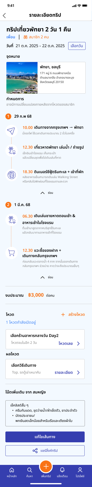
Nobody can agree — so nobody books.
Friend groups hit the same wall every time: schedules don't line up, nobody agrees on a place, and planning scatters across five tools — group chat, Instagram, review sites, a shared doc. Trips get delayed, downsized, or quietly die before anyone books.
PingHub is one platform for all of it: invite friends, vote on dates, agree on a place, build the itinerary together. The goal was solving coordination, not just the itinerary.
Context & constraints: a one-term university project, four-person team. The product splits into a User side (friend groups) and an Owner side (local businesses). I owned the User side end-to-end — built and tested in Figma, no dev handoff, so every decision had to hold up on its own.
Three personas, one shared tension.
To ground the design in real behavior, the team built three personas covering the different ways a friend-group trip falls apart.
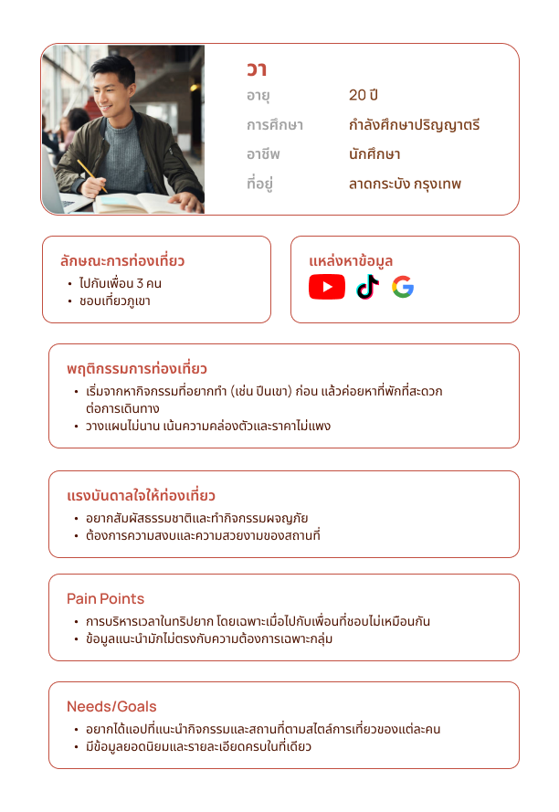
Wa
Needs the trip to fit how her group actually explores — she plans fast and pulls destination ideas from YouTube, TikTok, and Google, favoring adventure activities over where they sleep.
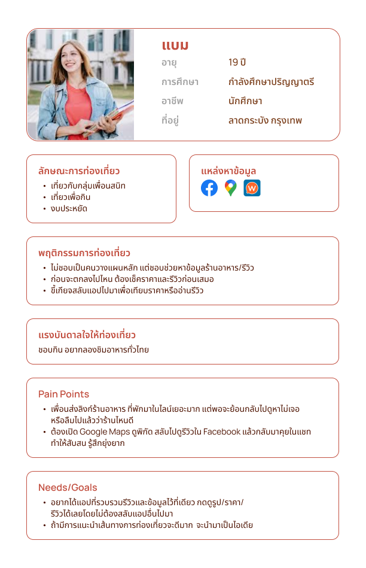
Bam
Tired of chasing reviews across five different apps just to decide whether one place is worth the trip.
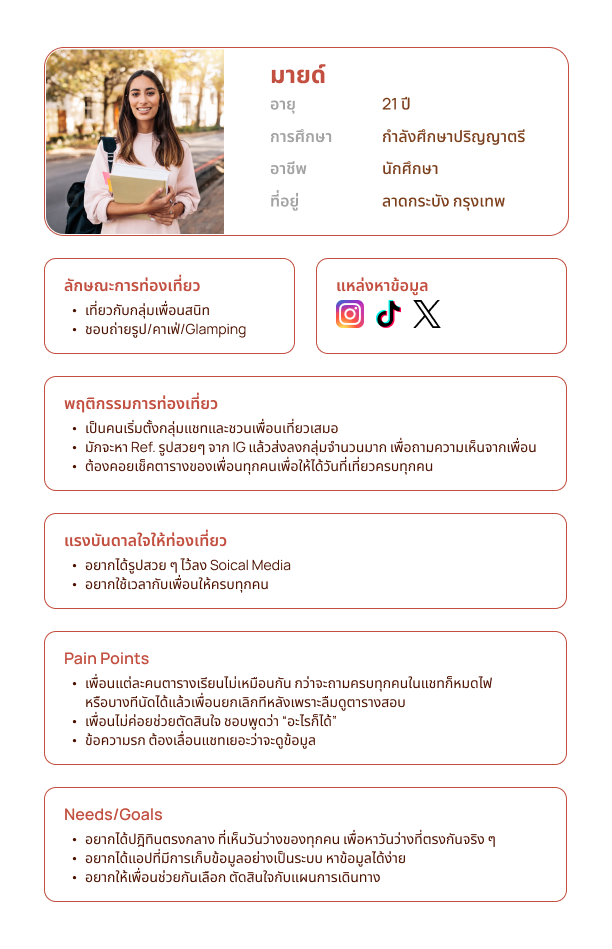
Mind
Can never get a straight answer on who's free. Hers is the problem this case study follows end to end.
Journey Mapping
We mapped Mind planning a trip with friends, twice: as-is, then to-be.
Same number of steps, opposite ending. As-is ends in breakdown — a friend cancels last-minute, and nobody had one place to check dates. To-be ends in confirmation — availability sits in one shared view instead of a scattered group chat.

From Insights to Structure: User Story Mapping
The journey became a user story map covering the full flow, from login through to the shared itinerary.

Scoped out for later: letting members shortlist preferences before a trip even exists, to ease the first vote.
Designing the User-side experience
I owned the front-end design for the User Role side — the 11 screens a friend group actually uses to plan a trip together.
- Create Trip — skip picking a date entirely; default to "wait for the group's vote"
- Trip Detail — the owner's home base: itinerary, budget, votes, one-tap edit/share
- Trip Members — a drawer from Trip Detail showing who's joined, pending, or declined, with quick actions to invite more or leave
- Create Vote — one builder reused for destinations and travel methods, with anonymous-voting and open-new-option toggles
- Recommended Route — auto-suggested route and day plan, sortable by price/reviews, one-tap regenerate
- Select Free Day — availability as a heatmap, so the best shared window is visible at a glance
- Create Post — highlights and tips, with a shortcut to pull a route straight from trip history
- Map — preview a destination's rating and reviews before adding it
- Invited User's Trip Detail — same screen, Accept/Decline instead of edit controls
- Voting — live counts, a clear cutoff — no guessing if it's closed
- Edit Route — add, remove, or re-time activities in place
Full-team effort
Research and scoping were built together as a four-person team — Sasiyakorn Chansiri (me), Nakul Chalermchaikosol, Tanagorn Fukuhara, and Pongsapak Tatongjai.
Individual ownership
My individual ownership was the User Role flow — the 11 screens above, designed and wired into an interactive prototype in Figma, with no dev handoff.
How it connects
Home → Create Trip → Invite Friends → (joining) Vote on Place/Time → Trip Timeline, or (not yet joined) Explore/Reviews → Promo & Packages.
Three decisions that shaped the User side.
Making group availability visible at a glance
Insight: friends' free time never lines up — Mind's persona and the journey map both show it.
Decision: a heatmap of everyone's availability instead of checking calendars by hand — darker means more people are free — so the best shared window is obvious without doing any math.
Outcome: one of the two features usability testers specifically called out as most useful.
Confirming before irreversible group actions
Insight: the journey map's sharpest dip lands right at group decision-making — the worst outcome in a shared-decision app is someone accidentally locking the group into something nobody agreed on.
Decision: accepting or declining an invite triggers a confirmation modal before the action is final, consistently, everywhere it matters.
Outcome: the pattern testers pointed to when describing the app as easy to trust.
Preventing errors before they happen, not after
Insight: Create Trip is the first thing a new user does — friction here loses the group before planning starts.
Decision: inline validation with plain-language prompts, plus mutually exclusive date choices (fixed dates or wait for the group's vote) so the form can't contradict itself.
Outcome: testers moved through trip creation with zero friction points — the cleanest part of the flow in testing.
One consistency choice worth noting: voting on a destination and voting on a travel method reuse the same component — single/multiple choice, live counts, deadline — so once someone learns it once, they've learned it everywhere.
The 11 screens, start to finish.
Scroll each row sideways on smaller screens. Tap any screen to see it larger.
Starting a trip
Creating a trip, the shared detail view everyone plans around, and who's actually in.
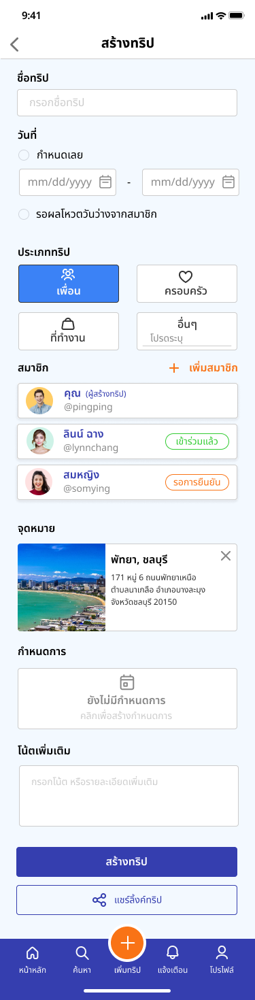
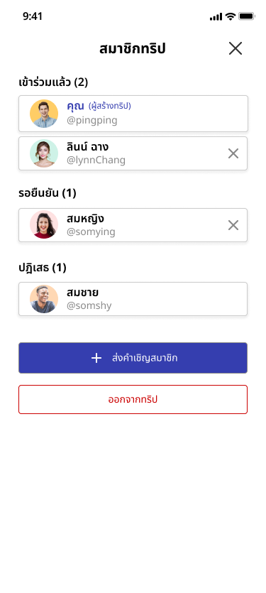
Getting everyone to agree
Scheduling and voting — the two stages the journey map flagged as highest-friction.
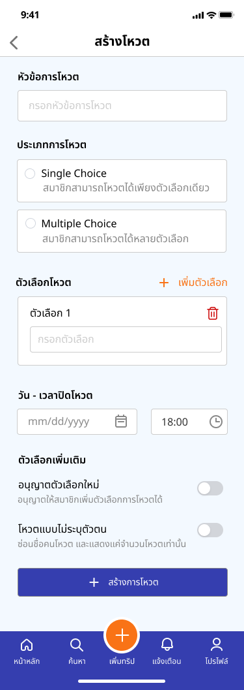
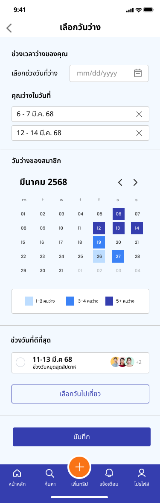
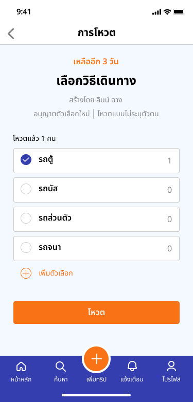
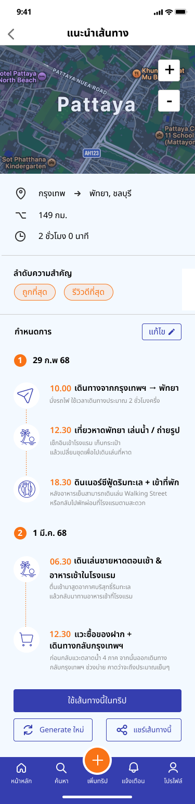
Joining & exploring
What an invited friend sees, and how the group researches a destination.
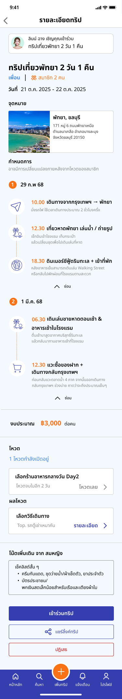
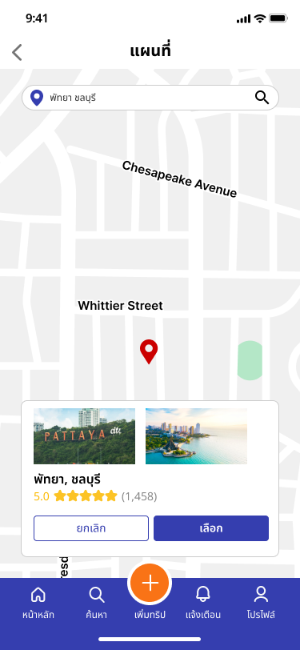
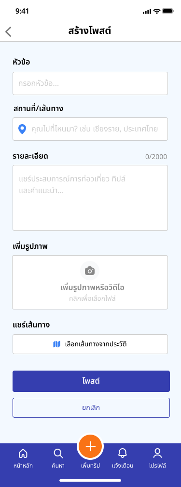
Building the itinerary
Once a destination is locked in, shaping the day-by-day plan.
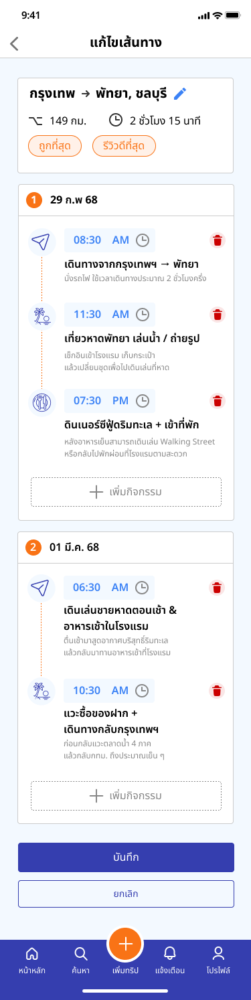
What testing actually confirmed.
PingHub's core question is "does this work for a group of people." We tested the full flow with real participants — create, invite, select dates, vote, build the itinerary, edit, share. The three decisions above are why it held up.
What testing caught
- Some buttons were too small to tap comfortably
- A few status indicators weren't clear at a glance
What it validated
- Navigation and the core flow were validated as intuitive — testers completed trip creation, voting, and itinerary editing without getting lost
- Availability visualization and voting — tied directly to our personas' pain points — were independently named as the most useful parts of the app
- Two concrete UI issues were caught and fixed before final delivery
On "impact": this was a course project, not a shipped product — so impact here means validated learning, not business metrics.
What I'd carry into the next project.
People tend to say the big things are fine and then quietly stumble on small execution details — a button that's just slightly too small, a status label that doesn't quite say "still pending." Those frictions rarely show up when demoing your own happy path; they only show up once someone else's thumb misses the target.
Designing for a group decision, not a single user's decision, meant the riskiest failure mode wasn't a typo or a broken link — it was one person accidentally locking in a choice nobody else had agreed to. Next time, I'd want to pressure-test that specific risk earlier, during wireframing, rather than catching it during usability testing.
What's next
Directions the team scoped but didn't build:
- Push notifications for votes and trip updates
- AI-based destination recommendations tailored to a group's interests
- Calendar sync
- A lightweight badge system for completed trips